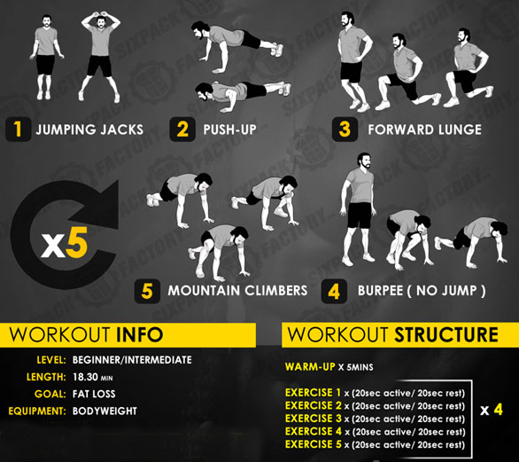

Go back
Fat Loss Programe For Beginners
If you're a beginner looking to get started on the road to fat loss, start here. This easy-to-follow guide has the exercise and nutrition plans you need for fast results. Possibly the most intimidating thing for any beginner trying to lose weight is knowing where to start with healthy eating and proper exercise. We made this plan to make that part easier. Everything you need is included, from diet to exercise. Follow the program, and you'll be well on your way. Eventually the optimal way to ensure fat loss is going to be counting calories, as annoyingly painful as you may find that to be. At first though, you can likely see some results simply by focusing on shifting the composition of your meals, which should automatically lower your daily calorie intake.  The workout is taken from http://www.bio-nutrition-intl.com
Go back